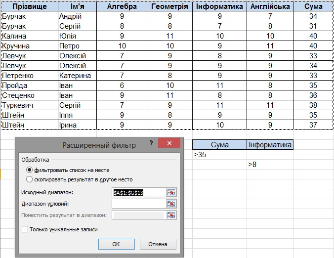

Фільтрування даних у таблицях
Якщо багато клітинок електронної таблиці заповнені різноманітними даними, то візуально вибрати ті, дані в яких потрібно проаналізувати, роздрукувати, скопіювати, змінити тощо, досить важко. Excel 2010 має засоби відбору тих даних, які відповідають певним умовам. Одним з таких засобів є фільтрування.
Фільтрування - це вибір даних у клітинках електронної таблиці, що відповідають певним умовам.
Після виконання фільтрування в таблиці відображаються лише ті рядки, дані в яких відповідають умовам фільтрування. Усі інші тимчасово приховуються.
Рис. 5.14. Діапазон клітинок після виконання команди Фільтр
Якщо встановити табличний курсор у довільну клітинку заповненого даними діапазону клітинок (деякі клітинки цього діапазону можуть бути порожніми) і виконати Основне  Редагування
Редагування  Сортування й фільтр
Сортування й фільтр  Фільтр або Дані
Фільтр або Дані  Сортування й фільтр
Сортування й фільтр  Фільтр, то біля правої межі кожної клітинки першого рядка цього діапазону клітинок з’являться кнопки відкриття списку
Фільтр, то біля правої межі кожної клітинки першого рядка цього діапазону клітинок з’являться кнопки відкриття списку  (рис. 5.14). Таким чином встановлюється режим, у якому можна здійснювати фільтрування.
(рис. 5.14). Таким чином встановлюється режим, у якому можна здійснювати фільтрування.
У цих списках (рис. 5.15) знаходяться:
- команди сортування даних за значеннями даного стовпця;
- команда Фільтрування за кольором;
- команда Видалити фільтр із;
- команда відкриття меню команд для встановлення умов фільтрування: Фільтри чисел (якщо в стовпці числові дані, рис. 5.15), або Текстові фільтри (якщо в стовпці текстові дані), або Фільтри дат (якщо в стовпці дати);
- прапорець Виділити все;
- прапорці для значень у клітинках даного стовпця.
Якщо зняти позначку прапорця Виділити все, встановити позначки прапорців для деяких з наведених значень і вибрати кнопку ОК, то відбудеться фільтрування, після якого в таблиці будуть відображатися лише ті рядки, у яких значення в даному стовпці дорівнюють вибраним.
Рис. 5.15. Команди встановлення умов фільтрування чисел
У списку Фільтри чисел команди Дорівнює, Не дорівнює, Більше, Більше або дорівнює, Менше, Менше або дорівнює, Між відкривають вікно Користувацький автофільтр (рис. 5.16), у якому можна встановити умову фільтрування: просту або складену з двох простих, поєднаних логічними операціями 1 чи АБО. Результат виконання цих логічних операцій збігається з результатом відповідних логічних функцій AND і OR. Саме ж фільтрування виконується після вибору кнопки ОК.
Рис. 5.16. Вікно Користувацький автофільтр
Після виконання фільтрування за умовою, наведеною на рисунку 5.16, таблиця, представлена на рисунку 5.14, виглядатиме так (рис. 5.17). У ній відображуються тільки ті рядки, для яких у стовпці Геометрія виконується умова (дорівнює 10) АБО (дорівнює 11). Інші рядки таблиці, заповнені даними, приховані.
Рис. 5.17. Таблиця з рисунка 5.14 після фільтрування за умовою, наведеною на рисунку 5.16
Звертаємо вашу увагу: кнопка в заголовку стовпця, за значеннями якого відфільтрована таблиця, набуває вигляду .
Команда Перші 10 відкриває вікно Фільтр перших 10 елементів (рис. 5.18), в якому можна встановити умову фільтрування, за якою відображатимуться тільки ті рядки таблиці, які містять у даному стовпці найбільших (найменших) 10 (або іншу встановлену кількість) значень.
Рис. 5.18. Вікно Фільтр перших 10 елементів
Команда Більше середнього (Менше середнього) виконує фільтрування, за яким відображуються тільки ті рядки таблиці, які містять у даному стовпці значення, більші (менші), ніж середнє арифметичне значення в даному стовпці.
Для команд встановлення умов Текстових фільтрів також відкривається вікно Користувацький автофільтр, поля якого містять списки умов для текстів. Приклад умови фільтрування текстів наведено на рисунку 5.19
Рис. 5.19. Умова для фільтрування текстів
У вікні Користувацький автофільтр у полях, розташованих ліворуч, умови можна лише вибирати зі списків, а в полях, розташованих праворуч, значення можна як вибирати зі списків, так і вводити з клавіатури. Причому можна для введених з клавіатури даних використовувати символи * і ?, утворюючи тим самим шаблони значень. Так, наприклад, для того щоб у наведеній вище таблиці відображалися тільки дані про учнів, прізвища яких містять літеросполучення єн, можна для першого стовпця таблиці встановити умову дорівнює *ен*.
Фільтрування можна здійснювати послідовно для кількох стовпців таблиці. Тоді кожний наступний фільтр буде застосований уже тільки для тих рядків таблиці, які відображаються після застосування всіх попередніх фільтрів. Тобто загальна умова фільтрування - це умови фільтрування для кожного стовпця, об’єднані логічною операцією І. Наприклад, якщо провести фільтрування за даними стовпця Сума з умовою більше 35, а потім фільтрування за даними стовпця Інформатика з умовою більше 8, то підсумкове фільтрування буде виконано з умовою (сума балів більше 35) І (бал з інформатики більше 8). Результат такого фільтрування наведено на рисунку 5.20.
Рис. 5.20. Результат послідовного фільтрування за значеннями стовпців Сума та Інформатика
Щоб відмінити фільтрування, можна:
- виконати Дані
 Сортування й фільтр Очистити;
Сортування й фільтр Очистити; - виконати Основне Редагування Сортування й фільтр Очистити;
- виконати команду Видалити фільтр із у списку стовпця, за даними якого було проведено фільтрування;
- установити позначку прапорця Виділити все у списку стовпця, за даними якого було проведено фільтрування, після чого вибрати кнопку ОК.
Щоб взагалі відмінити режим, у якому можна проводити фільтрування, потрібно повторно виконати одну з команд, яка встановлює цей режим.
Розширений фільтр
Способи фільтрування, розглянуті вище, дають змогу виконати фільтрування не для всіх випадків. Так, наприклад, розглянутими способами не можна виконати фільтрування за умовою, яка є об’єднанням умов фільтрування двох стовпців логічною операцією АБО, наприклад (сума балів більше 35) АБО (бал з інформатики більше 8). Виконати фільтрування за такою та іншими складеними умовами можна з використанням так званого розширеного фільтра.
Для встановлення розширеного фільтра і виконання фільтрування за таким фільтром необхідно:
- Скопіювати у вільні клітинки електронної таблиці назви тих стовпців, за даними яких буде здійснюватися фільтрування.
- Увести в клітинки під назвами стовпців умови фільтрування (якщо ці умови повинні об’єднуватися логічною операцією І, то вони мають розташовуватися в одному рядку, якщо логічною операцією АБО - у різних, рис. 5.21)

Рис. 5.21. Умови фільтрування та вікно Розширений фільтр. - Виконати Дані Сортування й фільтр Додатково.
- У вікні Розширений фільтр:
- Вибрати один з перемикачів для вибору області розташування результату фільтрування.
- Увести в поле Вихідний діапазон адресу діапазону клітинок, дані в яких повинні фільтруватися (найпростіше це зробити з використанням кнопки Згорнути з подальшим виділенням потрібного діапазону клітинок).
- Увести в поле Діапазон умов адресу діапазону клітинок, у яких розташовані скопійовані назви стовпців і умови (доцільно також використовувати кнопку Згорнути).
- Якщо був вибраний перемикач скопіювати результат до іншого розташування, увести в поле Діапазон для результатів адресу діапазону клітинок, де має розміститися результат фільтрування.
- Вибрати кнопку ОК.
На рисунку 5.22 представлено результат фільтрування, виконаного за умовами, наведеними на рисунку 5.21. Проаналізуйте результат цього фільтрування і порівняйте його з результатом фільтрування, наведеним на рисунку 5.20.
Рис. 5.22. Результат фільтрування за умовами, наведеними на рисунку 5.21.
Консолідація даних
Консолідація (узагальнення) даних виконується в тому випадку, якщо необхідно підсумувати дані з кількох таблиць однакової структури, що зберігаються в несуміжних діапазонах, на різних аркушах або в різних книгах. Під час консолідації виконуються ті самі операції, що і в разі обчислення проміжних підсумків, а саме: визначення суми, мінімального, максимального або середнього значення тощо. Для виконання консолідації слід виділити діапазон, де міститимуться підсумовані дані, виконати команду Дані  Консолідація й увести в діалоговому вікні Консолідація необхідні параметри. Типовий приклад таблиць, за якими зручно виконувати консолідацію, а також сам процес консолідації розглянемо у вправі 5.4.
Консолідація й увести в діалоговому вікні Консолідація необхідні параметри. Типовий приклад таблиць, за якими зручно виконувати консолідацію, а також сам процес консолідації розглянемо у вправі 5.4.